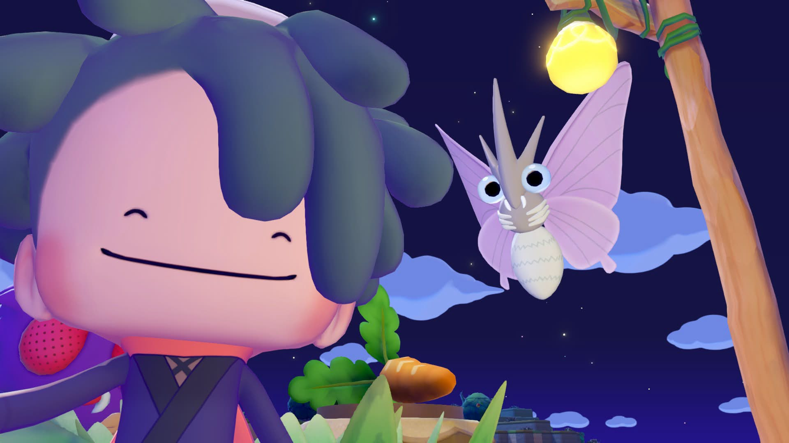

Pokémon Pokopia - the anti-sandbox sandbox

Man, this hat tastes soooo good right now!
23/03/2026
When Pokémon Pokopia was announced, to say I was unenthused would be an understatement. Considering the best thing the Pokémon franchise has produced in the entire Switch generation is the music that plays in the Sword and Shield train station… let’s just say my hopes haven’t exactly been sky-high for this franchise. And whilst I do enjoy some of Pokémon’s other spinoffs, Pokopia looked like a fusion of Minecraft and Animal Crossing: New Horizons, neither of which are games I particularly love.
I think I’d kind of written off “sandbox” as a genre that I don’t really resonate with. Minecraft and New Horizons both feel like games built upon the idea of making your own fun, where the game is a playground for your imagination! Which I… hate? Not to sound like a puppy-kicking soulless loser, but it just doesn’t do it for me.
When I play a game, I really need a goal. In fact, the clearer that goal the better. Not to say that I don't like non-linear games, but I enjoy open plan objectives and creative expression within linear structures. Pushing how I overcome these structures is the part that I find the most fun!
Pikmin is one of my favourite games ever, and partially because it had incredibly defined goals and methods for improving. It bottles this Dandori feeling - of crafting a well-put together plan to overcome a specific challenge. The bounds of that challenge are set, it's not a boundless game, and in fact; it specifically limits the player in order to push them to improve. 30 Ship Parts, 30 Days, 13 minutes per day. It is an expertly crafted piece in resource management.
Or, to use another P-K-M-N franchise with far more relevancy, the classic Pokémon games give me this same feeling. The goal is set, get all 8 badges; but the expression of how you build your team is what makes these games memorable and so heavily-replayable to me. Those challenges are most engaging when they balance the factors of player expression and tight design - an elegant dance of designing fun challenges that are fun regardless of how the player has grown their team. Does Pokémon actually do this? Not all the time, especially given that it's a kid's game that needs to remain accessible, but the team-crafting part is so fun that I keep coming back to these now 30 year old games. For an example of a series that does fun team-crafting in a much more challenging and thought provoking setting: see Fire Emblem.
I guess my main feeling with most sandbox games is that if I don't have a clear end goal to work towards... the whole thing starts to feel pointless. Limitations breed uniqueness, and an unlimited experience unfortunately feels much more limited to my topsy-turvy brain.
So what makes Pokopia different?
Pokopia is a really strange gizmo of a thing. For a game that shares so much DNA with Minecraft and New Horizons - Pokopia manages to walk a tightrope so tight and so rope-y that I'm not even sure if it can be seen on all axis. This is a game that simultaneously appeals to fans of those games for being just like them, and appeals to me for being... nothing like them? How is that even possible?
Pokopia’s main focus is on environmental puzzle solving, giving you a little prompt by saying “hey, a Pokémon could live somewhere like this!” and then it’s up to you to create that habitat using what you have around you. It’s nothing groundbreaking; but the gameplay loop of making these environments is so intrinsically nice that it creates this awesome compounding joy. Do it once, that’s cool! Do it five times, you see how the pieces you’ve rearranged and habitats you’ve already made compound into the next. Do it twenty times, and you look back and see glimpses into the variable past of this world - how doing lots of small things has brought together a much larger community.
This thematic feeling of gradual community and worldbuilding is so prevalent in Pokopia and it’s awesome! It’s like a build-your-own-jigsaw puzzle that changes in real time by your own design. Pokopia fixates on the journey rather than the destination by making every step of said journey feel like a new destination, and that makes me so happy.
Sidebar, but it’s possible that some of my reaction to this is in return to how I felt about Animal Crossing: New Horizons, a game in a series which I felt was always about the journey shifting to be much more about the destination. It felt like living in your town in AC:NH was merely an accessory to the way that it looked, with all of the customisation pushed to the forefront and the lived experience being punted offstage. It took barely a week of being on my island in New Horizons before each villager felt like a homogenous bit of code rather than a living being. My town never evolved if I wasn’t looking like it would in previous games. Nobody would move out, no new shops would open - it felt like a literal point of cryostasis.
And sure, some of that can be said about Pokopia. Pokémon repeat dialogue all the time, and the most that will really occur whilst you look away is new Pokémon appearing in habitats you’ve already designed. But because Pokopia doesn’t really pitch itself as a life sim game, but as a world reconstruction game, those aspects don’t feel like faults at all.
On a more controversial take, with the overall more-apt Minecraft comparison, I've never hugely bought into the gameplay loop of the "crafting" side because there's not much incentive to build something of your own design. Minecraft is a survival game and rewards function and efficiency over aesthetics and that is perfectly fine, but just not really for me. Because Pokopia really is just about the building, it's gameplay loop feels more intricately satisfying to me, and it's leading me to realise that I might not be so opposed other games purely about building and maintaining, like city builders or tycoon games.
Pokopia is a game about filling in the blanks. It is not a blank canvas - in fact, it is a completely pre-filled canvas. The developer's intentions shine through this game like a stained-glass window. It is a collection of delicately crafted little worlds, which have then been finely chiselled away at.
Change da world... My final message
In fact, it in itself is a game that chisels away at a larger design, using the setting of a post-apocalyptic Kanto to showcase this dystopian future that's barely a second away from our current present. Pokémon, especially Red and Blue, is different from other RPGs (except Earthbound, obviously) because it directly mirrors our own time. It's so fantastical because it is so realistic. The characters are just plucky youths with backwards caps and comfortable, yet easy to wear shorts. The dungeons aren't mythological towers or spawning floating cities, they are power plants, dark caves and patches of tall grass between the local cities. The final boss isn't god, it's your childhood best friend with the shit-eating grin. That relatability is what has made Pokémon such a success - everyone can see themselves as a Pokémon trainer.
Pokémon has tried environmentalist messages before, most famously with Ruby and Sapphire's clashing weather titans and most infamously with Sword and Shield's "what if jeff bezo's summoned satan during the superbowl because we need more fossil fuels" mess of a plot. The relationship between everday humanity, machinery and nature has always been a core tenant of the Pokémon franchise - but Pokopia takes this a step further by putting us in a world we've explored before, now ravaged by the tyranny of anti-enviromentalism.
Pokopia is not a game that merely play lip-service to the idea of environmentalism - it is a game about actively restoring natural habitats of local fauna, and it is a game that shows the effects of the abscence of humanity. Pokémon are creatures that are happiest with human intervention, becoming stronger and healthier - but they have steered the world too far and destroyed it in their own hubris. And other than nostalgia pandering - Kanto is the perfect region to tell this story in: that's kind of always been it's thing. The most famous piece of mythology about the region is not some ancient religion or myth, but rather a genetic experiment that scientists pushed too far, and destroyed the fabric of it's own home. As well as Pokopia being it's own thing, it almost feels like a Legends game, in how it uncovers a new point of view on an existing Pokémon location, and after 30 years of Kanto rehashes, providing a new perspective on somewhere so overdone is well-worth celebrating.
And through this clear set-dressing, the game provides a goal. Bring back nature and humanity. Rebuild this world - but don't construct a new world in your image. It gives the game so much more drive, purpose, and I feel so intensely motivated to see it through to the end, rather than drop off immediately.
Huffing Pokopium
Except... the game DOES let you construct a new world in your image, through the Palette Town side area, which is basically a blank canvas for the player to do whatever they want with. Essentially, to return to the Minecraft analogy, the Creative Mode of this game. I don't hugely care for this side area, but I see it's purpose and I have seen many people claim this is why they like the game in the first place. In this way, I guess Pokopia gets to have its cake and eat it too? ...Sigh.
It could definetly be said that this side area undermines part of the message of Pokopia. This barren featureless plain that is designed to be re-designed goes against the message of purposefully tending to a long-forgotten garden. If this area is the dividing line that manages to make the game appeal to both sides of the equation, then I guess, by some measures, I'm fine with it. Ultimately, I would have appreciated a bit more in-world context for this area, but if a blank canvas like Palette Town is the trojan horse needed to provide such an intricate experience as it's companion... then I'll eat humble pie here too. Sorry to the games that I've said that a side mode detracts from the main story. I guess we can all learn something, sometimes. (Maybe.)